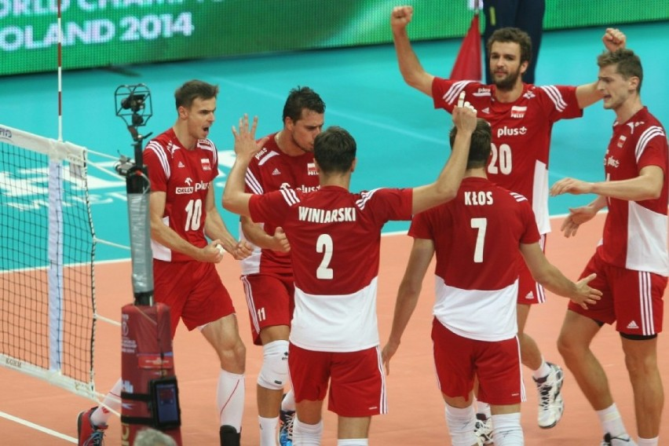

Jak Polska dostała się do finału Mistrzostw Świata
Kilka słów o półfinale:
Po zaciętym meczu Polacy pokonali Niemców 3:1 i awansowali do finału siatkarskiego mundialu.Co to był za mecz! 12 tysięcy kibiców w Spodku i jeszcze więcej w strefie kibica dopingowało biało-czerwonych w ich drodze do finału mistrzostw świata w siatkówce.
Pierwsze dwa sety wygrali Polacy lecz nie przyszło im to łatwo. W obu wypadkach Niemcy nie pozwolili nam zakończyć seta wraz ze zdobyciem 25 punktów. Pierwszy set to 26-24 dla reprezentacji Polski, a po drugim na tablicy świetlnej pojawił się wynik 28-26.
W trzecim secie Niemcy mieli już przysłowiowy nóż na gardle i musieli zrobić wszystko, aby zwyciężyć. Polacy najwidoczniej byli nieco rozluźnieni i przegrali trzecią partię 25-23. Mówi się, że kto nie wygrywa 3:0 ten przegrywa 3:2. Na szczęście w tym wypadku nie sprawdziła się ta siatkarska maksyma. Polska wygrała czwarty set z Niemcami 25:21 i tym samym awansowała do finału.
W drugim meczu półfinałowym Brazylia pokonała Francję po tie-breaku i to właśnie z siatkarzami z Ameryki Południowej zmierzymy się w niedzielnym finale.

Rysunek 1. Polska drużyna po zdobyciu punktu w trakcie meczu o finał